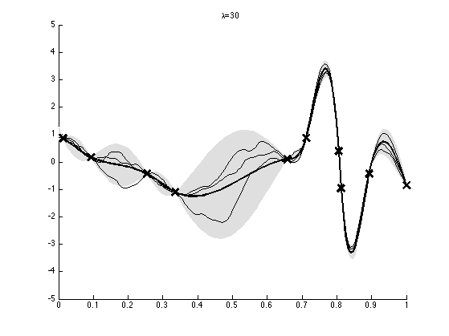
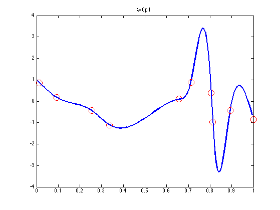
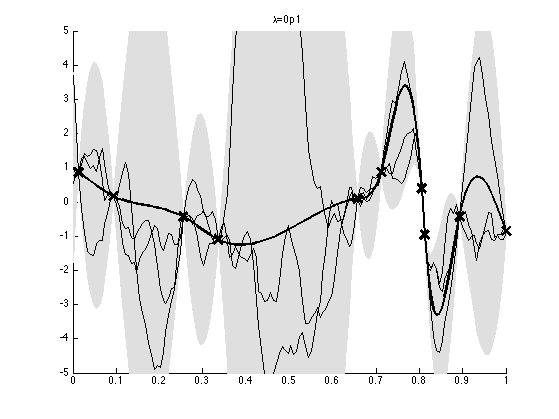

Contents
Interpolate some data using a joint Gaussian
Based on p140 of "Introduction to Bayesian scientific computation" by Calvetti and Somersalo
setSeed(1); D = 150; Nobs = 10; xs = linspace(0, 1, D); perm = randperm(D); obsNdx = perm(1:Nobs); hidNdx = setdiff(1:D, obsNdx); xobs = randn(Nobs, 1); % Make a (D-2) * D tridiagonal matrix L = spdiags(ones(D-2,1) * [-1 2 -1], [0 1 2], D-2, D); % prior precicion lambda it only affects the variance, % not the mean, so we pick a value that results in a pretty plot lambdas = [30, 0.1]; names = { '30', '0p1'}; for trial=1:numel(lambdas)
%names{trial} = sprintf('%4.3f', lambdas(trial));
lambda = lambdas(trial);
L = L*lambda;
Numerically stable method
L1 = L(:, hidNdx); L2 = L(:, obsNdx); lam11 = L1'*L1; lam12 = L1'*L2; postDist.Sigma = inv(lam11); postDist.mu = -inv(lam11)*lam12*xobs;
Naive Numerically unstable method
%{ precMat = L'*L; jointDist.mu = zeros(N, 1); jointDist.Sigma = inv(precMat); %jointDist.Sigma(obsNdx, obsNdx) + jointDist.Sigma(obsNdx, obsNdx)+1e-8; postDist = gaussCondition(jointDist, obsNdx, xobs); %}
Plot
figure; plot(xs(hidNdx), postDist.mu, 'linewidth', 2); hold on; plot(xs(obsNdx), xobs, 'ro', 'markersize', 12); title(sprintf('%s=%s', '\lambda', names{trial})); xbar = zeros(D, 1); xbar(hidNdx) = postDist.mu; xbar(obsNdx) = xobs; sigma = zeros(D, 1); sigma(hidNdx) = sqrt(diag(postDist.Sigma)); sigma(obsNdx) = 0; % plot marginal posterior pm sd as gray band figure; hold on; mu = xbar; S2 = sigma.^2; f = [mu+2*sqrt(S2);flipdim(mu-2*sqrt(S2),1)]; fill([xs'; flipdim(xs',1)], f, [7 7 7]/8, 'EdgeColor', [7 7 7]/8); plot(xs(obsNdx), xobs, 'kx', 'markersize', 14, 'linewidth', 3); plot(xs, xbar, 'k-', 'linewidth', 2); title(sprintf('%s=%s', '\lambda', names{trial})); set(gca, 'ylim',[-5 5]); % plot samples from posterior predictive for i=1:3 fs = zeros(1, D); fs(hidNdx) = gaussSample(postDist, 1); fs(obsNdx) = xobs; plot(xs, fs, 'k-', 'linewidth', 1) end printPmtkFigure(sprintf('gaussInterpDemo%s', names{trial}))  
end % next trial